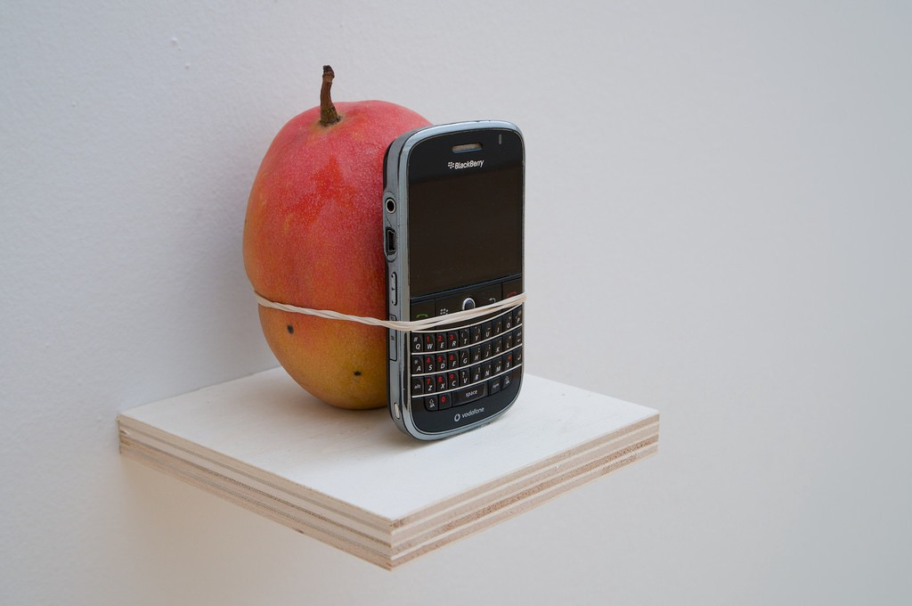

El arte en el siglo XXI
 Sebastián Castillo
Sebastián CastilloEl concepto actual de arte se ha comenzado a dirigirse hacia un área de estudio más participativa, donde antes el arte se limitaba a representar contextos de escenarios políticos o la exclusividad de las personas con poder, ahora el arte puede representar intenciones del artista, tanto personal como colectiva, abriendo así un gran campo de conocimiento para explorar.
Durante el siglo XX, el arte ha pasado por distintos contextos y épocas, por lo que poco a poco ha ido evolucionando al ritmo en el que la sociedad también lo hacía hasta llegar a la actualidad. El arte actual del siglo XXI, busca nuevos estímulos, ya no se limita ni el artista ni las herramientas que este usa, ahora el artista usa como materia prima todo tipo de conocimientos, desde lo análogo hasta lo tecnológico, todo esto con el fin de comunicar, pero ya no solo se limita a sentimientos o mostrar un contexto, ahora el arte también es capaz de brindar experiencias únicas, ser usado como un lenguaje o incluso una abstracción de realidades alternas a la que conocemos. Esto ha generado que el concepto de arte para muchos poco a poco se vaya tergiversando, ya que con todo lo previamente mencionado de lo que es capaz de hacer el arte y de todo lo que falta por explorar, es muy complicado calificar algo como que si es una obra de arte o (como algunos artistas lo llaman) “hamparte” (El arte que no es arte).

El término “Hamparte” es usado por muchos artistas contemporáneos para hacer referencia a obras que no pueden ser consideradas arte, ya sea por su objetivo sea puramente comercial, o que se le atribuya valores inexistentes a objetos comercializados, etc. Pero para apoyar esta idea de definir aquello que no es arte nos basamos en la teoría del arte planteada por George Dickie en los años 60’s, en la cual afirmaba que para que una obra sea considerada arte, es necesario que la red social conformada por los espectadores, instituciones, otros artistas, etc. afirme que es una obra de arte, porque sin esta aprobación de las personas la obra perdía significado. Esta definición que nos ofrece George Dickie tiene algunas complicaciones en la actualidad, ya que con la llegada del internet y tecnología capaz de compartir imágenes o videos en tan solo segundos, hace que la red social por la que debe pasar la obra para ser considerada arte sea mucho más amplia, ya no se limita a unos pocos sino a todo un público de distintas partes del mundo. A pesar de cuestiones como la creación del movimiento del hamparte por la necesidad de clasificar obras “presuntuosas” como otra cosa distinta al arte, no cabe duda de que han habido muchos avances dentro del campo, donde los artistas usan varios conocimientos para crear sus obras, y esto permite que el arte sea algo más flexible, adaptándose a distintos campos que en un principio se pensaba que eran totalmente opuestos, como lo es el caso de la tecnología y el dibujo, que a pesar de que en un principio no estaban hechas para convivir una con la otra, ambas fueron capaces de crear herramientas tales como photoshop o cosas más complejas como lápices capaces de dibujar en tres dimensiones, herramientas las cuales permiten a artistas crear sus obras. En conclusión, el arte a pesar de sufrir muchos cambios durante su historia, ha sido capaz de adaptarse a las épocas contemporáneas, e incluso aunque lleve muchos siglos evolucionando aún no somos capaces de darle una definición clara al concepto de arte, pero… tal vez eso mismo es lo que hace del arte algo especial.